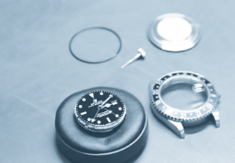
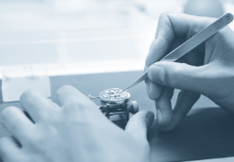
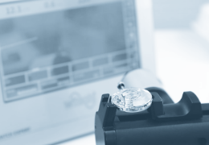
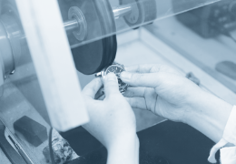
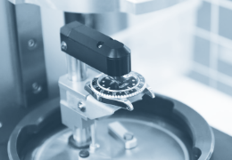
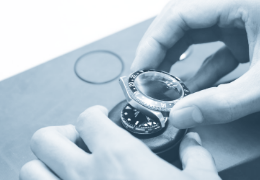
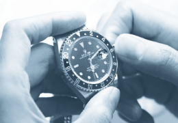

SwissTimeWorks 【Specialist in Luxury Timepiece Repair】 東京、国分寺市にてロレックス、オメガ、オーデマピゲ、パテックフィリップなど高級時計修理を行う工房
ご愛用時計の定期メンテナンスの重要性
多くのスイス製高級時計は時の試練に耐えられるように設計、製造されております。最適なお手入れを定期的に実施されていれば何世代にも渡って美しく正確な時を刻み続けることも可能です。メンテナンスの頻度はご使用状況や保管状態等によって変化いたしますが、一般的にクォーツ（電池式）時計で6年から８年、機械式（ゼンマイ式）時計で４年から６年のメンテナンスサイクルが推奨されております。
オーバーホールとは
オーバーホールとは、時計が正常に動作し本来有する機能を保持し続ける為に行うメンテナンスサービスの事です。ムーブメントの構成部品は多いもので300点から400点にもなります。それらの一つ一つを丁寧に分解して洗浄・注油、劣化パーツの交換と精度調整などを行い、本来の精度、機能を取り戻す一連の作業のことを指します。 定期的なオーバーホールを受けずにお使い続けられますとパーツの摩耗、損傷により精度不良・故障のリスクが高まります。こうした事態を未然に防ぐサービスがオーバーホールです。
スイスタイムワークスではオーバーホールを実施した時計を納品日から起算して現行モデルでは業界最長の２年間、アンティークモデルは6ヶ月間の保証を致しております。
オーバーホールの流れ
01
ケースの分解

ストラップやブレスレットをケースから取り外し、ケースを分解します。
精密な顕微鏡を使用して不具合箇所の特定と調整を行い、摩耗パーツの有無などを調べます。
精密な顕微鏡を使用して不具合箇所の特定と調整を行い、摩耗パーツの有無などを調べます。
02
ムーブメントの洗浄
ムーブメントの部品を一点一点丁寧に分解、点検し、各部品を専用設備と環境に配慮された溶剤を用いて金属粉、油塊などの汚れを綺麗に洗い流します。
03
ムーブメント組立、注油

ス洗浄後、ムーブメントパーツを一つ一つ再検査し、ムーブメントを組立、注油します。メーカーによって使用する潤滑油の種類、注油量および注油ポイントなどが異なる為、メーカーの技術仕様に基づいて細心の注意を払って慎重に組み立てます。
この作業により、ムーブメントは長期にわたって正確に機能します。
04
精度測定と調整及び機能点検

メーカーの品質基準に照らし合わせて、ムーブメントの精度を調整し、各機能を点検します。
05
ケースとブレスレットの洗浄、研磨

06
ケースの組立と防水性の回復

分解されていた外装部品を再び組み立て、パッキンを交換します。
07
ケーシング

ムーブメントに文字盤、針などを取付け、動作確認をした後、それらをケースの中に組み込み、再び精度の点検と細部の調整を行います。
08
ケースの分解

それぞれの時計の品質基準に基づき、最終検査を行います。
自動巻きの巻き上げテスト、リューズ操作点検、クロノグラフの作動テスト、持続時間テスト、精度の日差点検などを行い最終的にランニングテストを行ってお客様の元へ出荷いたします。